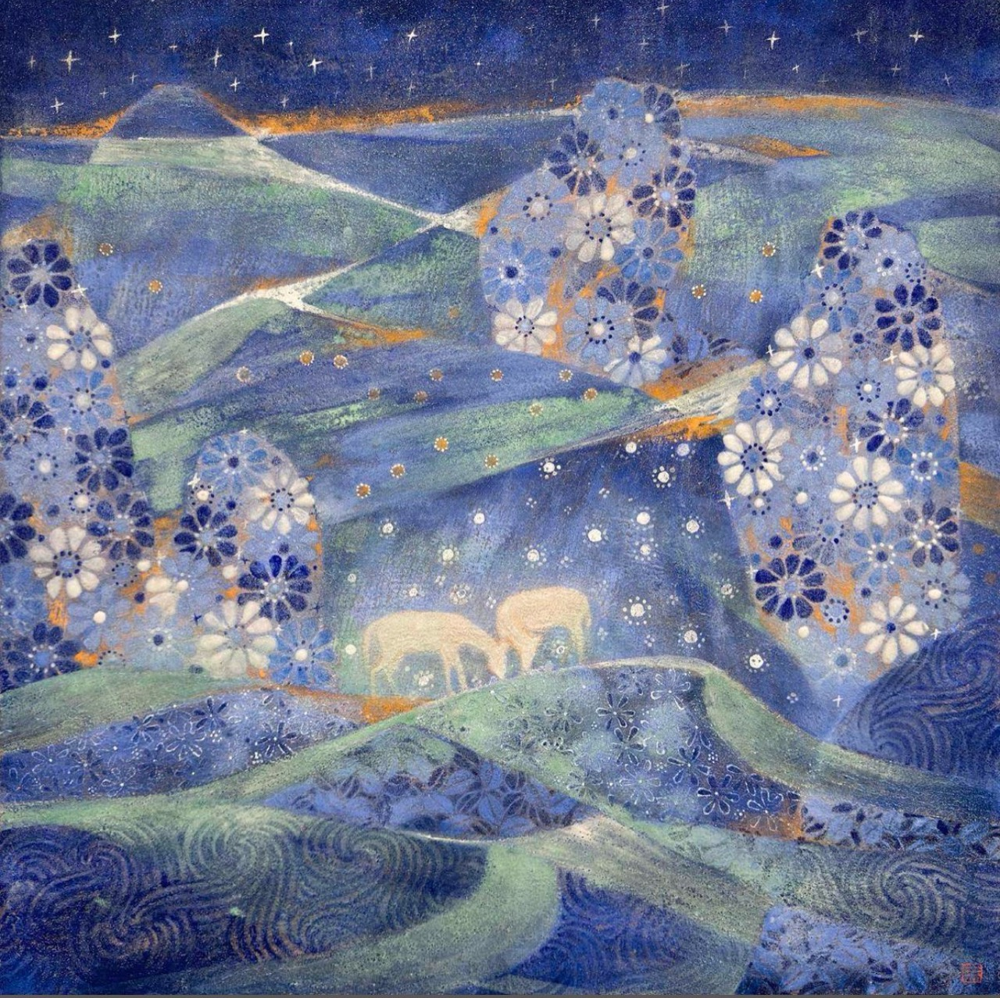
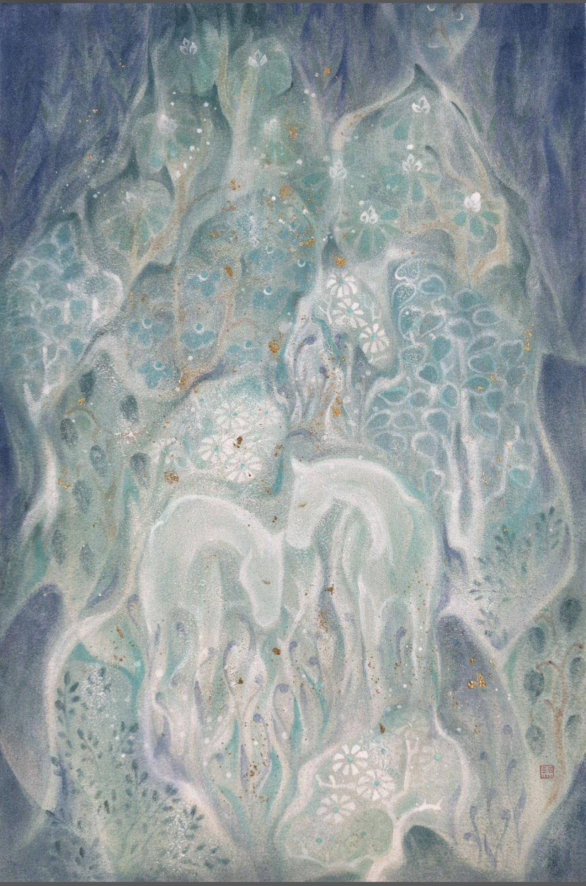

Rabi Collection Framework
以私人美術館的方法整理收藏：一位藝術家形成精神世界，一位藝術家呈現從學院寫實走向表現性山川的成長線索。
Artists

A2 Academic Blue Chip
中國當代岩彩精神語言探索者。收藏主線已形成完整的夢境、動物象徵與精神花園系統。
A3 Growth Core / A2 Candidate
中央美院體系中從寫實根基走向黑白灰山川、光與線及表現性結構的成長型核心藝術家。